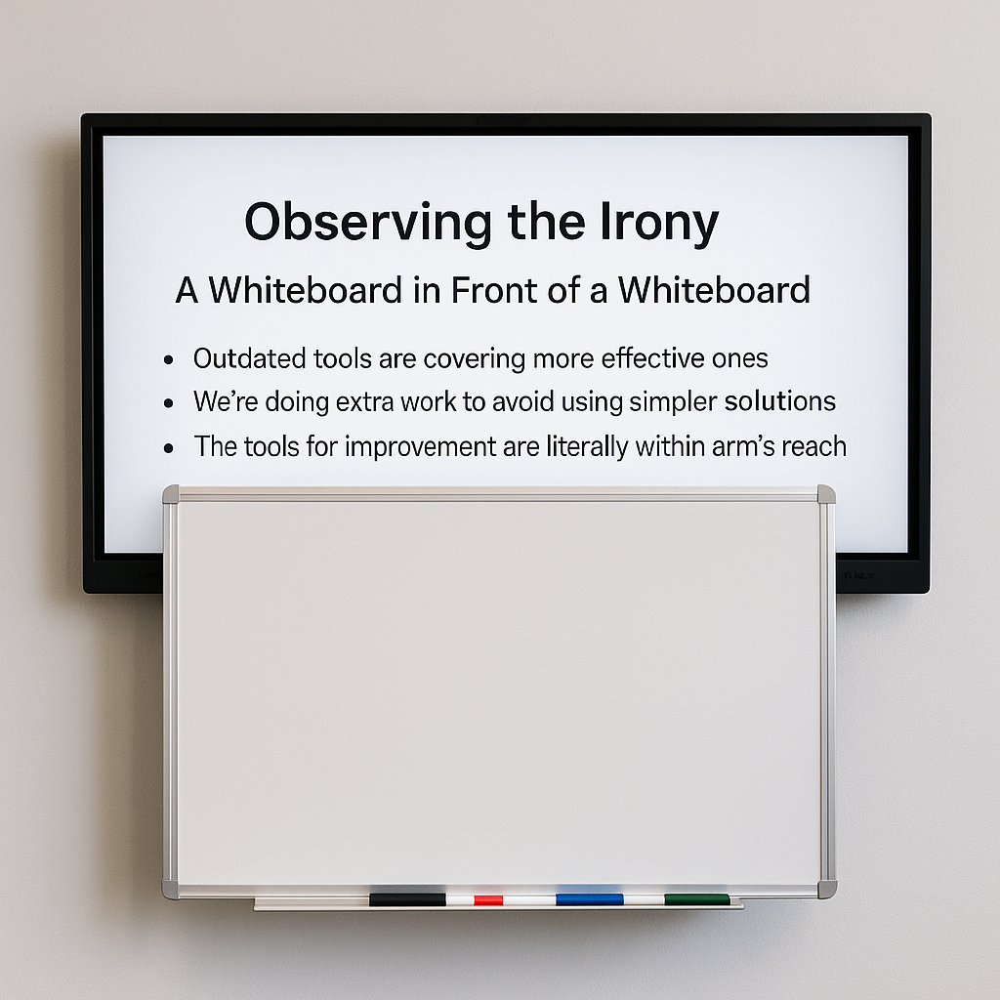

Digital Whiteboard Integration Proposal
1. Introduction
1. Introduction
Title: Modernizing Our Whiteboard Workflow
Subtitle: From Marker Smudges to Searchable Notes

📝 Prepared by [Your Name], [Date]
2. Observing the Irony
A Whiteboard in Front of a Whiteboard
It’s ironic — and telling — that a fully capable digital display is mounted directly behind a traditional dry-erase whiteboard. This configuration serves as an unintentional metaphor:
- Outdated tools are covering more effective ones
- We’re doing extra work to avoid using simpler solutions
- The tools for improvement are literally within arm’s reach

This setup is a reminder that meaningful change often comes not from new tools, but from better use of what we already have.
3. The Case for Going Digital
- Handwritten notes are prone to erasure or misinterpretation
- Notes on the board are not easily shared between shifts
- Dry-erase boards provide no version history or traceability
- Digital notes can be saved, searched, and shared instantly
{kind=link}
4. Leveraging Existing Infrastructure
- A digital board is already mounted and ready to use
- No additional hardware or budget is required
- We can begin using it today with minimal setup
📷 Image of the digital display, labeled for clarity 📷 Side-by-side comparison photo or diagram
5. Recommended Applications
Use lightweight and accessible tools:
- Microsoft Whiteboard – Seamless integration with Teams and 365
- Excalidraw – Fast and open-source with local file support
- Jamboard (or OpenBoard alternatives)
Common features include:
- Finger/stylus input
- Save/export options (PNG, PDF)
- Reusability and cloud storage
📷 Screenshots of each app interface in use
6. Proposed Workflow (General Requests Only)
- Start of shift: Launch whiteboard app
- Add general notes (maintenance, reminders, tools, etc.)
- End of shift: Save/export as image or PDF
- Upload to shared Teams folder or link in Power Apps passdown form
📷 Mock digital whiteboard with sketch examples 📷 Export/save interface screenshot
7. Example Use Cases (General, Not Job-Specific)
⚠️ Note: This board is for shift-level communication, not part- or program-specific issues.
-
"General cleanup needed around Machine 3" ➡️ Operator draws cluttered area ✅ Cleanup handled next shift
-
"Need new batteries for edge finder" ➡️ Arrow added to tool area ✅ Tool crib notified in advance
-
"Check torque wrench calibration next week" ➡️ Diagram with reminder date ✅ Lead confirms it's scheduled
📷 Screenshots of sketches matching these use cases
8. Benefits of the Digital Whiteboard
- Maintains historical record of requests
- Prevents loss of critical notes
- Increases clarity for incoming shifts
- Eases audits and supports training
📷 Example folder showing stored whiteboard exports
9. Pilot Program Proposal
- Trial use of the digital board for one week
- Keep physical board for comparison
- Evaluate ease of use, clarity, and adoption
📷 Before/after visual comparison of both systems 📝 Provide sign-up form for pilot participants
10. Conclusion
This isn’t about replacing our whiteboard — it’s about unlocking the one behind it.